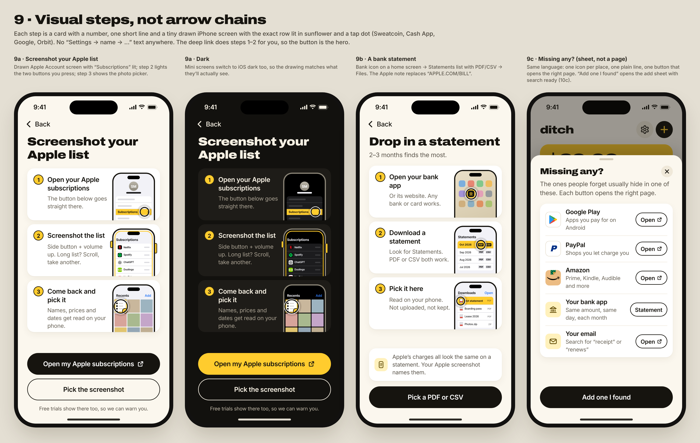
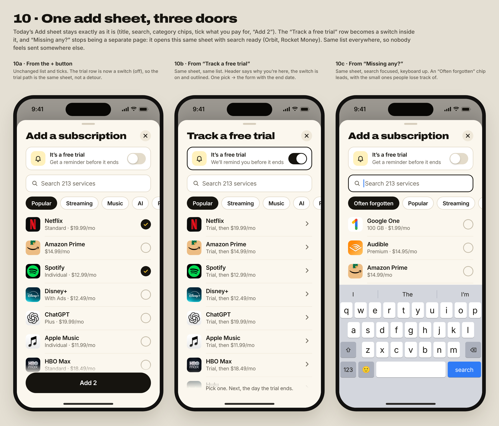
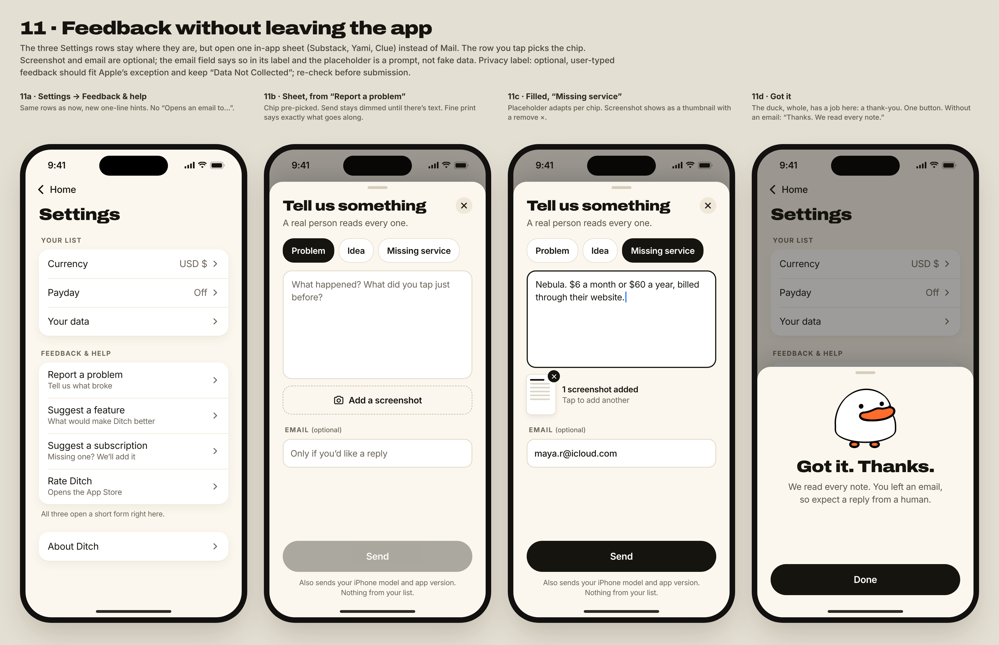
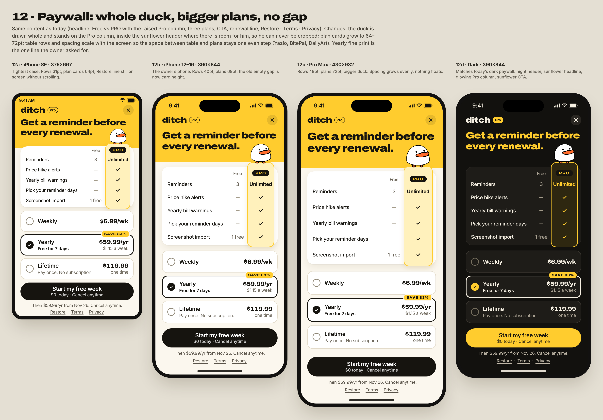
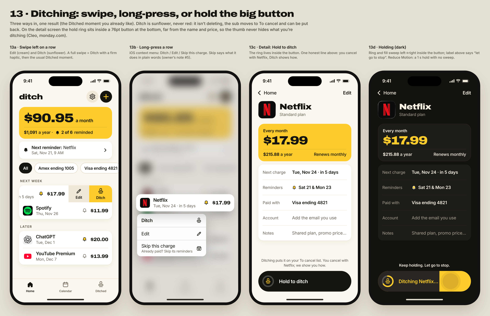
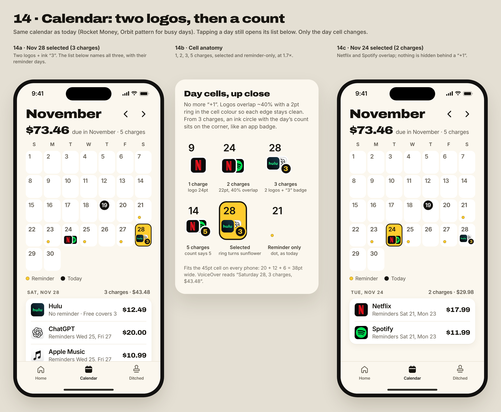
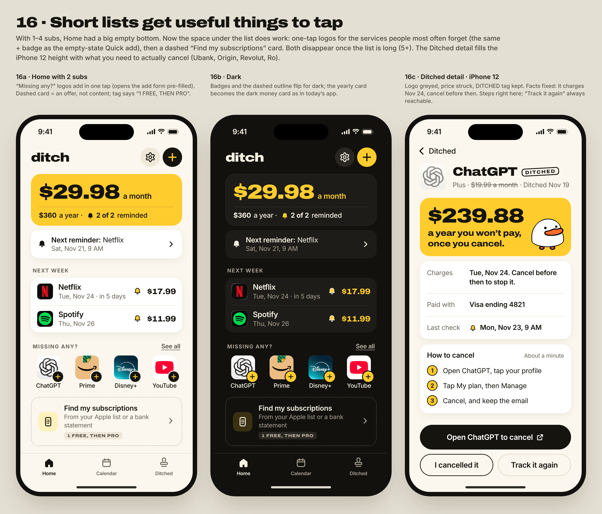

Mockups for approval, matched to the current build (Nov 19 screenshots). Light mode on every board; dark versions of the three most-used screens: Apple steps (9), paywall (12), Home (16), plus the hold-to-ditch state (13). Scores are my self-audit across UI, wording, colour and hierarchy.






